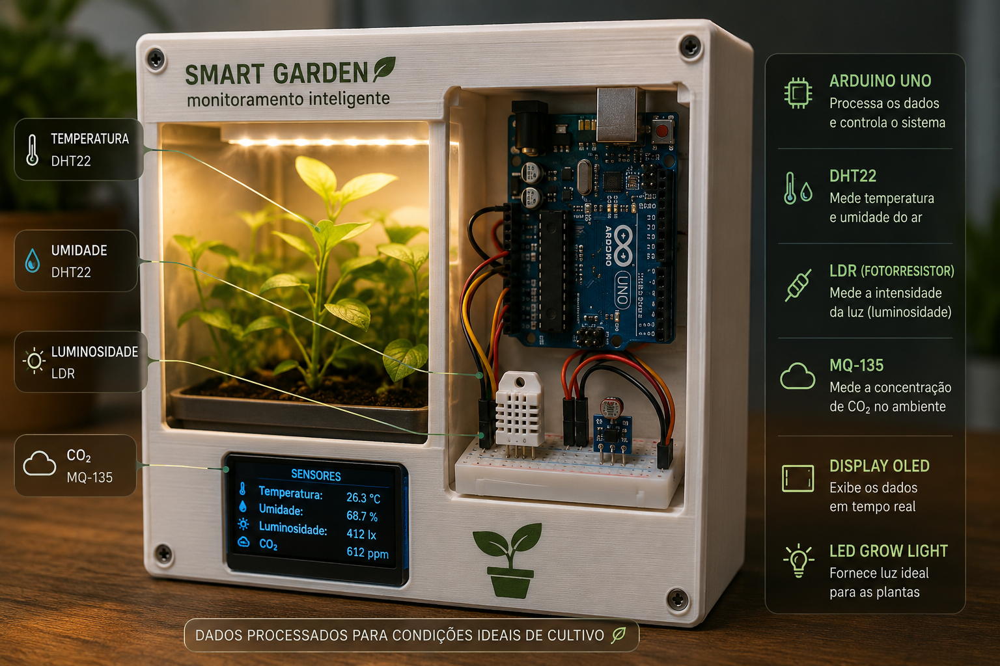
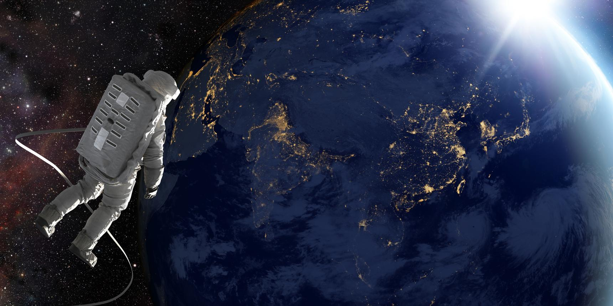

Economia
Redução significativa dos custos de transporte espacial.
Cultivando alimentos sustentáveis para missões espaciais de longa duração.
Conhecer ProjetoTransportar alimentos da Terra para a Lua possui custo extremamente elevado.
Missões longas dependem de soluções autônomas para produção sustentável de alimentos.

Sensores inteligentes monitoram temperatura, umidade, luminosidade e concentração de CO₂.
Os dados são processados para garantir condições ideais de cultivo.

Garantir autonomia alimentar para futuras bases lunares.
Desenvolver soluções sustentáveis aplicáveis também na Terra.

Astronautas envolvidos em missões espaciais de longa duração.
Pesquisadores, cientistas e comunidades em regiões de difícil cultivo.

Redução significativa dos custos de transporte espacial.
Produção local de alimentos sem depender de reabastecimento.
Monitoramento contínuo reduz perdas e falhas críticas.